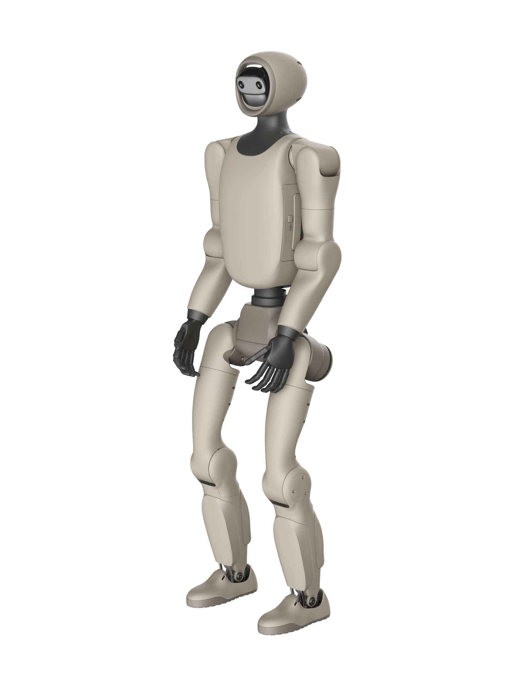

Yinyi NE01 Ultra
A humanoid robot from China.
Sources retrieved: 9 October 2026 (A)
- Intended use, per the manufacturer
- Not stated
- Indicative price
- Not stated

Manufacturer's rendering.
Specifications
8/33 specifications disclosed 25 not stated
25 fields hidden
How to read the figuresShow guideClose
- not statedNo source
- noStated by a source
- 0Reported as zero
- ASource
- A*Source with a caveat (select it)
- CERecords only what the manufacturer states regarding CE marking.
Select a source marker for source details and notes.
Physical4/14 disclosed
Power2/5 disclosed
Sensing and autonomy2/6 disclosed
Payload and expansion0/3 disclosed
Commercial0/1 disclosed
Compliance & certifications0/4 disclosed
Against the field
Each strip holds every robot of this type in the guide that states the figure, one bar per group of values. Further right means a larger figure, not a better robot. A taller bar means more robots in that group.
Degrees of freedom
28DoF
131 humanoids state degrees of freedom
77 state a higher figure, 37 a lower one. 1 more states exactly the same figure. 2 state a range that includes this figure. 13 state only a bound (≥ or ≤) and are not ranked. Protoclone V1 lies beyond the end of the axis and is drawn at its edge as an open bar.
Runtime
approximately 120minNote: load condition not stated
94 humanoids state a runtime
32 state a higher figure, 9 a lower one. 33 more state exactly the same figure. 4 state a range that includes this figure. 15 state only a bound (≥ or ≤) and are not ranked.
Max speed
9km/h5.59mphOur conversion from 2.5 m/s. The manufacturer does not state an imperial figure itself, so the conversion has no source of its own.
88 humanoids state a top speed
12 state a higher figure, 45 a lower one. 5 more state exactly the same figure. 25 state only a bound (≥ or ≤) and are not ranked.
Notes
The producer calls the NE01 a high-dynamic humanoid robot (translated from the Chinese).
The producer states that the figures are laboratory test data and that actual performance can differ with the environment and how the robot is operated (translated from the Chinese).
The producer gives a maximum joint torque of 180 N·m for the Ultra version (translated from the Chinese).
The producer notes that peak torque differs between joint motors and that the maximum joint torque is the highest peak torque of any joint motor (translated from the Chinese).
The producer notes that the maximum arm load varies considerably with how far the arm is extended (translated from the Chinese).
The producer gives an office at No. 6 Nongkeyuan West Road, Haidian District, Beijing (translated from the Chinese).
The producer gives a second office at Nanhu Road 58, Wuzhong District, Suzhou, Jiangsu (translated from the Chinese).
Sources
One line per source, not per figure: a source has one retrieval date.
- Agenisomai.com/product-robot/ne01Main source. Retrieved 9 October 2026